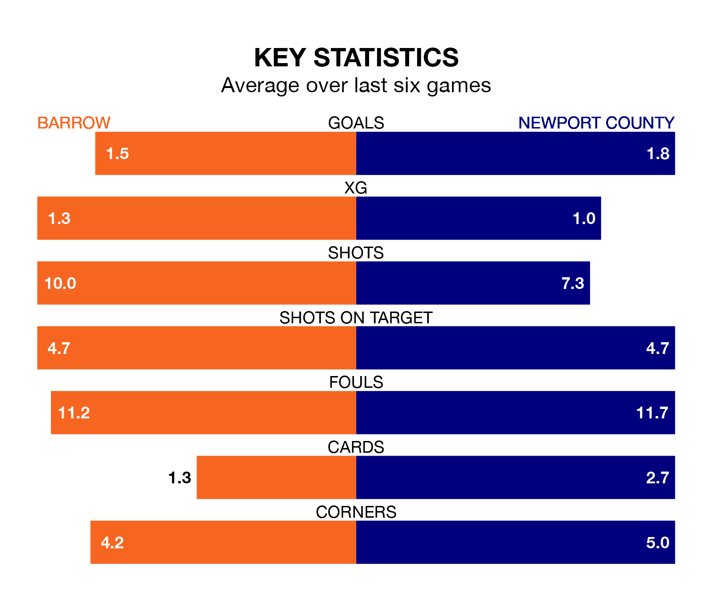

Barrow host Newport County on Saturday at the SO Legal Stadium in EFL League Two.
In their last league match, on March 16, Barrow drew with Harrogate Town 0-0 at home.
Newport won, 2-0 away at AFC Wimbledon, with Bryn Morris and Kyle Jameson on the scoresheet.
With Paul Farman between the sticks, Barrow can rely on one of the league's safest pair of hands. He has kept 13 clean sheets in his 35 appearances this season, and only one other 'keeper – AFC Wimbledon's Alex Bass – has been able to prevent the opposition scoring on more occasions in EFL League Two.
In Newport's net, Nick Townsend has nine clean sheets in 36 games. He has conceded a goal every 68 minutes, 20% more often than the 85 minutes between goals for Farman.
In the last 10 years, Barrow and Newport have played each other on seven occasions. They won three each, and they drew once.
On average, the Bluebirds scored 1.3 goals and the Exiles 1.1 in those matches.
Their last meeting was on September 16, when they played out a 1-1 draw.
With 58 goals in 38 games so far this season, County are scoring at the league's average rate with 1.5 goals per game. But they are conceding at an average rate too, letting in 58 goals at a rate of 1.5 per game.
The Bluebirds, meanwhile, are below average scorers, with 1.4 goals per game. They have conceded 1.1 goals per game.
The hosts are sixth in the table after 37 games, of which they have won 16 and drawn 13, earning 61 points.
The Exiles are five places behind Barrow in 11th, with 16 wins and seven draws putting them on 55 points.
Barrow are in mixed form in EFL League Two, with two wins and two draws from their last six games.
With three wins and three losses over that period, the away side's form is slightly better – they have taken nine points from 18, compared to the Bluebirds' eight.
Updated: 10:19 (UTC), 22/03/24